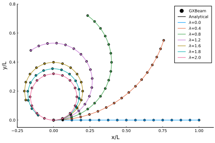
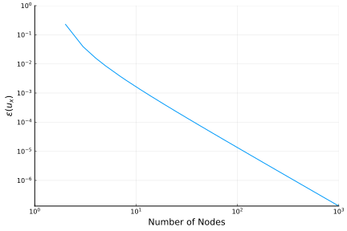
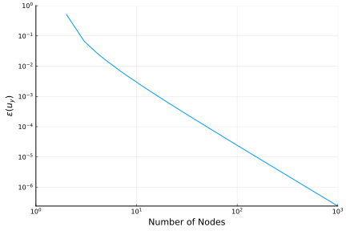

Cantilever with a Tip Moment
This example shows how to predict the behavior of a cantilever beam that is subjected to a constant tip moment. This is a common benchmark problem for the geometrically nonlinear analysis of beams.

This example is also available as a Jupyter notebook: tipmoment.ipynb.
using GXBeam, LinearAlgebra
L = 12 # inches
h = w = 1 # inches
E = 30e6 # lb/in^4 Young's Modulus
A = h*w
Iyy = w*h^3/12
Izz = w^3*h/12
# bending moment (applied at end)
λ = [0.0, 0.4, 0.8, 1.2, 1.6, 1.8, 2.0]
m = pi*E*Iyy/L
M = λ*m
# create points
nelem = 16
x = range(0, L, length=nelem+1)
y = zero(x)
z = zero(x)
points = [[x[i],y[i],z[i]] for i = 1:length(x)]
# index of endpoints of each beam element
start = 1:nelem
stop = 2:nelem+1
# compliance matrix for each beam element
compliance = fill(Diagonal([1/(E*A), 0, 0, 0, 1/(E*Iyy), 1/(E*Izz)]), nelem)
# create assembly of interconnected nonlinear beams
assembly = Assembly(points, start, stop, compliance=compliance)
# pre-initialize system storage
system = System(assembly, true)
# run an analysis for each prescribed bending moment
states = Vector{AssemblyState{Float64}}(undef, length(M))
for i = 1:length(M)
# create dictionary of prescribed conditions
prescribed_conditions = Dict(
# fixed left side
1 => PrescribedConditions(ux=0, uy=0, uz=0, theta_x=0, theta_y=0, theta_z=0),
# moment on right side
nelem+1 => PrescribedConditions(Mz = M[i])
)
# perform a static analysis
static_analysis!(system, assembly;
prescribed_conditions = prescribed_conditions)
# post-process the results
states[i] = AssemblyState(system, assembly;
prescribed_conditions = prescribed_conditions)
endThis problem has a simple analytical solution, which we obtained from "Study of the Geometric Stiffening Effect: Comparison of Different Formulations" by Juana M. Mayo, Daniel Garcia-Vallejo, and Jaime Dominguez.
# analytical solution (ρ = E*I/M)
analytical(x, ρ) = ifelse(ρ == Inf, zeros(3), [ρ*sin(x/ρ)-x, ρ*(1-cos(x/ρ)), 0])Plotting the results reveals that the analytical and computational results show excellent agreement.
using Plots
pyplot()# set up the plot
plot(
xlim = (-0.25, 1.1),
xticks = -0.25:0.25:1.0,
xlabel = "x/L",
ylim = (-0.05, 0.8),
yticks = 0.0:0.2:0.8,
ylabel = "y/L",
aspect_ratio = 1.0,
grid = false,
overwrite_figure=false
)
# create dummy legend entries for GXBeam and Analytical
scatter!([], [], color=:black, label="GXBeam")
plot!([], [], color=:black, label="Analytical")
# plot the data
for i = 1:length(M)
local x, y
# GXBeam
x = [assembly.points[ipoint][1] + states[i].points[ipoint].u[1] for ipoint =
1:length(assembly.points)]
y = [assembly.points[ipoint][2] + states[i].points[ipoint].u[2] for ipoint =
1:length(assembly.points)]
scatter!(x/L, y/L, label="", color = i)
# Analytical
x0 = range(0, L, length=100)
deflection = analytical.(x0, E*Iyy/M[i])
x = (x0 + getindex.(deflection, 1))
y = getindex.(deflection, 2)
plot!(x/L, y/L, label="\$\\lambda\$=$(λ[i])", color=i)
end
plot!(show=true)
We can use this problem to test the accuracy and convergence of this package. To do so we set $\lambda = 1$ and repeat the analysis for a variety of grid sizes. We measure the normalized tip displacement error $\varepsilon(u)$ using the following expression
\[\varepsilon(u) = \left| \frac{u - u^a}{u^a} \right|\]
where $u$ is the calculated tip displacement (at x=L) and $u^a$ is the analytical tip displacement.
grid_sizes = unique(round.(Int, 10 .^ range(0,3,length=25)))
L = 12 # inches
h = w = 1 # inches
E = 30e6 # lb/in^4 Young's Modulus
A = h*w
Iyy = w*h^3/12
Izz = w^3*h/12
# bending moment (applied at end)
λ = 1.0
m = pi*E*Iyy/L
M = λ*m
# run an analysis for each grid size
states = Vector{AssemblyState{Float64}}(undef, length(grid_sizes))
for (igrid, nelem) in enumerate(grid_sizes)
local x, y, z, points, start, stop, compliance, assembly, system
# create points
x = range(0, L, length=nelem+1)
y = zero(x)
z = zero(x)
points = [[x[i],y[i],z[i]] for i = 1:length(x)]
# index of endpoints of each beam element
start = 1:nelem
stop = 2:nelem+1
# compliance matrix for each beam element
compliance = fill(Diagonal([1/(E*A), 0, 0, 0, 1/(E*Iyy), 1/(E*Izz)]), nelem)
# create assembly of interconnected nonlinear beams
assembly = Assembly(points, start, stop, compliance=compliance)
# create dictionary of prescribed conditions
prescribed_conditions = Dict(
# fixed left side
1 => PrescribedConditions(ux=0, uy=0, uz=0, theta_x=0, theta_y=0, theta_z=0),
# moment on right side
nelem+1 => PrescribedConditions(Mz = M)
)
# perform a static analysis
system, converged = static_analysis(assembly;
prescribed_conditions = prescribed_conditions)
# post-process the results
states[igrid] = AssemblyState(system, assembly;
prescribed_conditions = prescribed_conditions)
end# calculate analytical solution
dxa, dya = analytical(L, E*Iyy/M)
# extract computational solution
dx = [states[igrid].points[end].u[1] for igrid = 1:length(grid_sizes)]
dy = [states[igrid].points[end].u[2] for igrid = 1:length(grid_sizes)]
# compute error
εx = abs.((dx .- dxa) ./ dxa)
εy = abs.((dy .- dya) ./ dya)using Plots
pyplot()# plot the x-error
p1 = plot(grid_sizes .+ 1, εx, label="",
xlabel = "Number of Nodes",
xaxis=:log,
xlim = (10^0, 10^3),
xtick = 10.0 .^ (0:3),
ylabel = "\$\\varepsilon(u_x)\$",
yaxis=:log,
ylim = (-Inf, 10^0),
ytick = 10.0 .^ -(0:7),
overwrite_figure=false,
show=true)
plot!(show=true)
# plot the y-error
p2 = plot(grid_sizes .+ 1, εy, label="",
xlabel = "Number of Nodes",
xaxis=:log,
xlim = (10^0, 10^3),
xtick = 10.0 .^ (0:3),
ylabel = "\$\\varepsilon(u_y)\$",
yaxis=:log,
ylim = (-Inf, 10^0),
ytick = 10.0 .^ -(0:7),
overwrite_figure=false,
show=true)
plot!(show=true)
We observe second-order algebraic convergence for both x and y tip displacement errors. We can therefore conclude that a large number of elements are likely necessary in order to obtain highly accurate solutions using this package. For problems where high accuracy solutions are critical, higher order shape functions, such as the Legendre spectral finite elements used by BeamDyn are likely more computationally efficient.
This page was generated using Literate.jl.